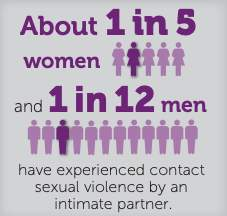
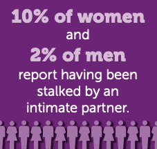

1 Introduction
1 Introduction: What is Intimate Partner Violence?
2 MODULE 1: Recognizing Intimate Partner Violence
1 Who is Affected by Intimate Partner Violence? 2 Types of Abuse 3 Power and Control Wheel 4 Categorizing Intimate Partner Violence 5 Case Analysis: Lois and James Sumpter
3 MODULE 2: Intimate Partner Sexual Violence
1 What is Sexual Violence? 2 Sexual Violence in Our Society 3 Rape and Sexual Assault in the Context of Intimate Partner Violence
4 MODULE 3: Responding to Intimate Partner Violence
1 The Impact of Intimate Partner Violence on Victims 2 Safety Planning with Victims 3 Responding to Someone Experiencing Intimate Partner Violence
2:12
1 in 4 women experience severe IPV
1 in 7 men experience severe IPV
Affects millions annually
Occurs across all racial backgrounds
Cultural contexts vary
Barriers may differ by community
Women most commonly affected
Men also experience IPV
LGBTQ+ individuals face unique challenges
Immigrants facing language barriers
People with disabilities
Pregnant and postpartum individuals
Those in rural or isolated areas
Slide 1 of 10
Whether you are taking this course as part of a professional development plan or because you are seeking to be more informed about intimate partner violence, this course has been organized to help you understand the prevalence of intimate partner violence, its components, and how you can be a helpful ally to survivors.
In this first module, you explore the faces of intimate partner violence, types and categories of abuse, and the foundations of power and control on which it is based.
By the end of this module, you will be able to:
Define intimate partner violence
Recognize ways a person who causes harm establishes power and control in their relationship
Identify different categories of relationship violence


Intimate partner violence is far more common than many people realize. Understanding the scope of this issue is essential for recognizing its impact across communities.
According to the CDC's National Intimate Partner and Sexual Violence Survey:
- About 1 in 4 women and nearly 1 in 10 men have experienced contact sexual violence, physical violence, and/or stalking by an intimate partner during their lifetime and reported some form of IPV-related impact
- Data from U.S. crime reports suggest that 16% (about 1 in 6) of homicide victims are killed by an intimate partner
- About 11 million women and 5 million men who reported experiencing contact sexual violence, physical violence, or stalking by an intimate partner in their lifetime said that they first experienced these forms of violence before the age of 18
These statistics reveal that IPV is a widespread public health issue affecting millions of individuals. The data also shows that IPV often begins early in life, highlighting the importance of prevention and early intervention.
Sometimes people have a very specific image in their mind of what a survivor of intimate partner violence looks like. There are harmful stereotypes that survivors are:
Poor, uneducated, and totally reliant on the person causing harm
Meek and don't stand up for themselves
Have low self-esteem
Disheveled, nervous, and jumpy
Put up with or excuse abusive behavior
Have traditional beliefs about gender roles
Why These Stereotypes Are Harmful:
Making these generalizations reinforces the idea that only certain types of people are affected by intimate partner violence. It is important to emphasize, however, that intimate partner violence occurs in every demographic regardless of age, race, gender, sexuality, and socioeconomic class.
Assuming that intimate partner violence only happens in certain communities can make it easy to overlook signs and symptoms that someone we know is experiencing abuse in their relationship.
The Reality:
IPV can happen to anyone:
Across all income levels
In all racial and ethnic communities
Regardless of education level
In all types of relationships
Regardless of gender identity or sexual orientation
In all religious and cultural backgrounds
As professionals like Dr. Patel conducting health screenings or Aisha monitoring workplace dynamics, recognizing that IPV crosses all boundaries is essential for trauma-informed practice.
Drag each behavior into the correct abuse category.
Behaviors to Categorize:
Pushing, shoving, or hitting
Constant criticism and humiliation
Controlling access to money
Forcing unwanted sexual acts
Preventing contact with family/friends
Physical Abuse
Emotional Abuse
Economic Abuse
Sexual Abuse
Isolation/Control
Check Answers
Question 1 of 3
According to the CDC's National Intimate Partner and Sexual Violence Survey, approximately how many women experience contact sexual violence, physical violence, and/or stalking by an intimate partner during their lifetime?
About 1 in 10 women About 1 in 4 women About 1 in 2 women About 1 in 20 women
Which statement is TRUE about who can experience intimate partner violence?
IPV primarily affects people from low-income communities IPV occurs in every demographic regardless of age, race, gender, sexuality, and socioeconomic class IPV mostly affects people with low self-esteem who don't stand up for themselves IPV is most common among people who have traditional beliefs about gender roles
What does the data tell us about when many people first experience intimate partner violence?
Most people first experience IPV in their 30s and 40s IPV typically begins after marriage Many people first experience IPV before the age of 18 IPV usually begins in retirement years
Previous Next Question Submit Quiz
Review Answers
Previous Lesson Introduction: What is Intimate Partner Violence?